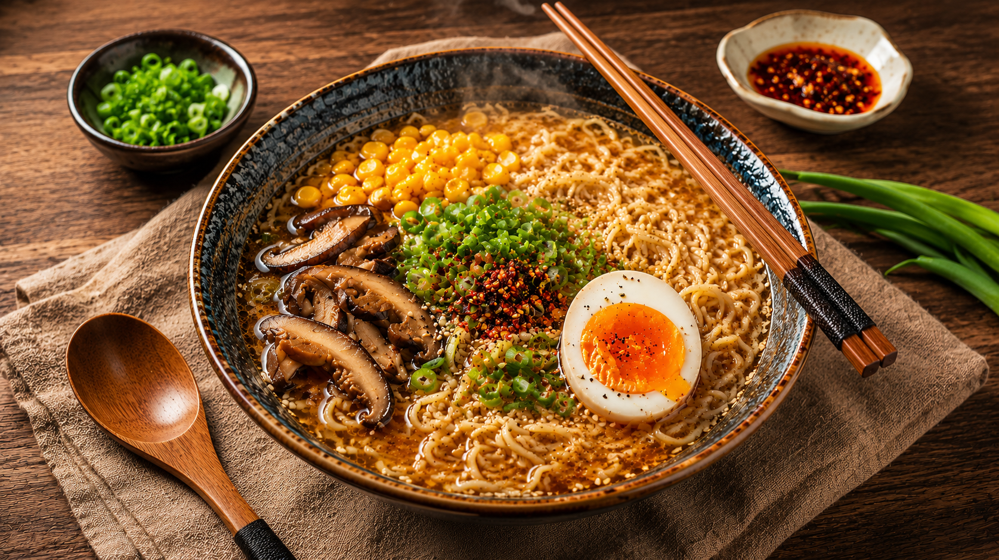

🍜 Ramen

Ramen is a comforting Japanese noodle soup made with a flavorful broth, springy noodles, and a variety of delicious toppings. Warm, satisfying, and easy to customize, it's a favorite meal enjoyed around the world.
🥣 Ingredients
- 1 pack ramen noodles
- 2 cups chicken or vegetable broth
- 1 boiled egg
- 1/2 cup sliced mushrooms
- Sweet corn
- Spring onions
- Soy sauce
- Sesame oil
- Black pepper
- Chili flakes (optional)
📋 Recipe Information
⏱ Preparation time
|
🍽 Serves
|
⭐ Difficulty
|
20 mins |
2 people |
Easy |
👨🍳 Instructions
- Bring the broth to a gentle boil.
- Add the mushrooms and corn, then cook for a few minutes.
- Stir in a little soy sauce, sesame oil, and black pepper.
- Add the ramen noodles and cook until tender.
- Pour the ramen into a bowl.
- Top with the boiled egg and chopped spring onions.
- Sprinkle chili flakes if desired and serve hot.
💡 Tip
Don't overcook the noodles. They should stay slightly firm for the best texture.
🍽 Best served with
- Gyoza 🥟
- Iced Tea 🧋
- Kimchi 🥬
⬅ Back to Recipe Journal